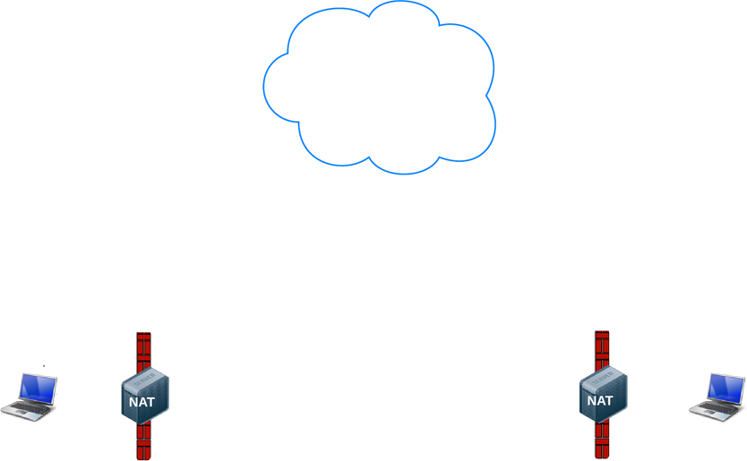
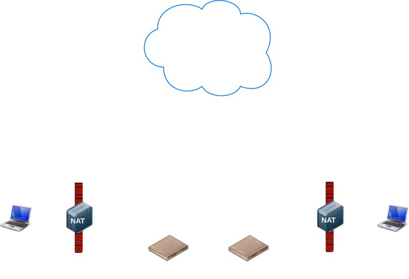
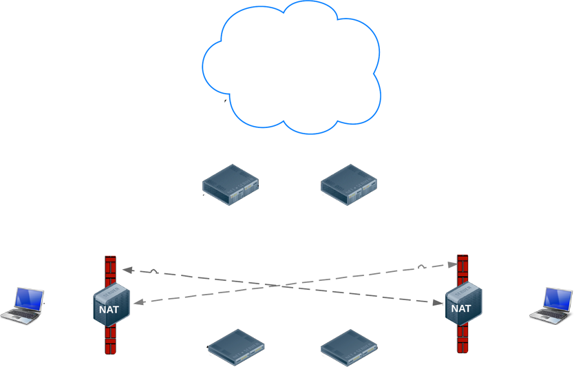
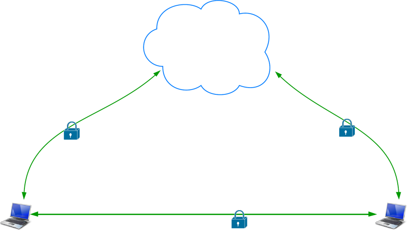

JSChannel
WebRTC
Building a scalable WebRTC based chat client
Saturday 19th of July 2014
Joe Pettersson @ JSChannel
https://github.com/Joe8Bit/webrtc-workshop
Joe Pettersson
@Joe8Bit | github.com/Joe8Bit
Low cost, high quality audio and video communication
... and data!
WebRTC is a new front in the long war for an open and unencumbered web
Brendan Eich – Mozilla CTO and inventor of JavaScript
- Decentralised
- Increased privacy
- Security by default
The WebRTC APIs
- Acquiring audio and video = MediaStream (aka getUserMedia)
- Communicating audio and video = RTCPeerConnection
- Communicating arbitrary data = RTCDataChannel
MediaStream
MediaStream
- Represents a stream of audio and/or video
- Can contain multiple 'tracks'
- Obtain a MediaStream with
navigator.getUserMedia()
MediaStream aka getUserMedia
var constraints = { video: true };
function successCallback (stream) {
var video = document.querySelector("video");
video.src = window.URL.createObjectURL(stream);
}
function errorCallback (error) {
console.log("navigator.getUserMedia error: ", error);
}
navigator.getUserMedia(constraints, successCallback, errorCallback);
http://idevelop.ro/ascii-camera/
http://webcamtoy.com/
Constraints
Media type, resolution, frame rate
var constraints = {
video: {
mandatory: {
minWidth: 1280,
minHeight: 720
}
}
};
Web Audio
// Success callback when requesting audio input stream
function gotStream(stream) {
var audioContext = new webkitAudioContext();
// Create an AudioNode from the stream
var mediaStreamSource = audioContext.createMediaStreamSource(stream);
// Connect it to the destination or any other node for processing!
mediaStreamSource.connect(audioContext.destination);
}
navigator.webkitGetUserMedia({audio:true}, gotStream);
gUM screencapture (Experimental)
var constraints = {
video: {
mandatory: {
chromeMediaSource: 'screen'
}
}
};
navigator.webkitGetUserMedia(constraints, gotStream);
Hidden behind the --enable-usermedia-screen-capture flag
https://html5-demos.appspot.com/static/getusermedia/screenshare.html
RTCPeerConnection
getUserMedia
❤
RTCPeerConnection
It's complex yo'
- Signal processing
- Codec handling
- Peer to peer communication
- Security
- Bandwidth management
- ...
Implementing it isn't
var pc = new RTCPeerConnection();
pc.onaddstream = gotRemoteStream;
pc.addStream(localStream);
pc.createOffer(gotOffer);
function gotOffer(desc) {
pc.setLocalDescription(desc);
sendOffer(desc);
}
function gotAnswer(desc) {
pc.setRemoteDescription(desc);
}
function gotRemoteStream(e) {
attachMediaStream(remoteVideo, e.stream);
}
RTCDataChannel
Communicate arbitrary data
onreceivemessage = handleIncomingData(data);
...
var myData = [
{
id: "awesomeGameCharacter";
x: 19,
y: 4,
velocity: 18
},
....
]
sendData(myData);
- Same API as WebSockets
- Ultra-low latency
- Unreliable/UDP or reliable/TCP
- Secure
Implementation
var pc = new webkitRTCPeerConnection(servers, { optional: [{ RtpDataChannels: true }]});
pc.ondatachannel = function (event) {
receiveChannel = event.channel;
receiveChannel.onmessage = function (event){
document.querySelector("div#receive").innerHTML = event.data;
};
};
sendChannel = pc.createDataChannel("sendDataChannel", {reliable: false});
document.querySelector("button#send").onclick = function (){
var data = document.querySelector("textarea#send").value;
sendChannel.send(data);
};
https://www.sharefest.me/
Servers and Protocols

Abstract Signaling
-
Need to exchange 'session description' objects:
- What formats I support, what I want to send
- Network information for peer-to-peer setup
- Can use any messaging mechanism
- Can use any messaging protocol
An RTCSessionDescription
v=0
o=- 7614219274584779017 2 IN IP4 127.0.0.1
s=-
t=0 0
a=group:BUNDLE audio video
a=msid-semantic: WMS
m=audio 1 RTP/SAVPF 111 103 104 0 8 107 106 105 13 126
c=IN IP4 0.0.0.0
a=rtcp:1 IN IP4 0.0.0.0
a=ice-ufrag:W2TGCZw2NZHuwlnf
a=ice-pwd:xdQEccP40E+P0L5qTyzDgfmW
a=extmap:1 urn:ietf:params:rtp-hdrext:ssrc-audio-level
a=mid:audio
a=rtcp-mux
a=crypto:1 AES_CM_128_HMAC_SHA1_80 inline:9c1AHz27dZ9xPI91YNfSlI67/EMkjHHIHORiClQe
a=rtpmap:111 opus/48000/2
...
STUN and TURN
Ugh.
Firewalls and NATs suck
Ideal world
The real world
STUN
- Tell me what what my public IP address is
- Simple server, cheap to run
- Data flows peer-to-peer
STUN
TURN
- Provide a cloud fallback if peer-to-peer communication failss
- Data is sent through server, uses server bandwidth
- Ensures the call works in almost all environments
STUN and TURN
ICE
- ICE (Interactive Connectivity Establishment) a framework for connecting peers
- Tries to find the best path for each call
- Vast majority of calls can use STUN (85%+) (Source: http://webrtcstats.com)
Security
- Mandatory encryption for media and data
- Secure UI, explicit opt-in
- Sandboxed, no plugins
- WebRTC Security Architecture
Secure Pathways
Building a WebRTC App
chrome://webrtc-internals
The differing browser API's are a pain
Lots of boilerplate. Ugh.
Video Chat
SimpleWebRTC
var webrtc = new WebRTC({
localVideoEl: 'localVideo',
remoteVideosEl: 'remoteVideos',
autoRequestMedia: true
});
webrtc.on('readyToCall', function () {
webrtc.joinRoom('My room name');
});
Uses Google's public STUN servers
Peer to Peer data
PeerJS
var peer = new Peer('someid', {key: 'apikey'});
peer.on('connection', function(conn) {
conn.on('data', function(data){
// Will print 'hi!'
console.log(data);
});
});
// Connecting peer
var peer = new Peer('anotherid', {key: 'apikey'});
var conn = peer.connect('someid');
conn.on('open', function(){
conn.send('hi!');
});
Now let's build an app with SimpleWebRTC!
https://github.com/Joe8Bit/webrtc-workshop
webrtcbook.com
Thanks!
Credits
- HTML5Rocks for the diagrams
- webrtcbook.com for being a fantastic resource
- Parshotam Lal Tandom for the awesome photo of bangalore